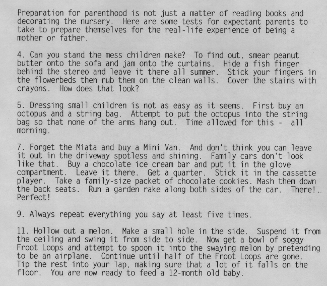
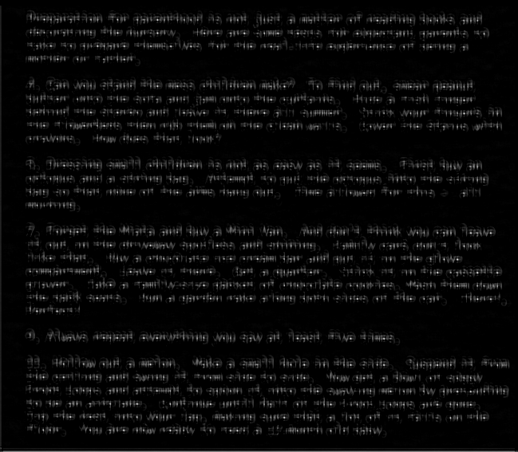

Computer Vision Library
I am currently enrolled in a computer vision course at Clemson University. I've decided to construct my class projects so that they may be used as a general purpose computer vision library.
Approximate Start Date: September 2019
Source code: Given that this is a university course, please contact me for access to the source code.
Implemented Functions:
- Image I/O with PPM P5 images
- Image comparison
- Image cropping
- Arbitrary symmetric kernel filtering
- Thresholding
- Template matching
In progress:
- Corner/Edge finding
- Thinning
Sample Images
Blur Kernel:
Before
After
Template Matching:

Input Text

After Template Matching
After Thresholding